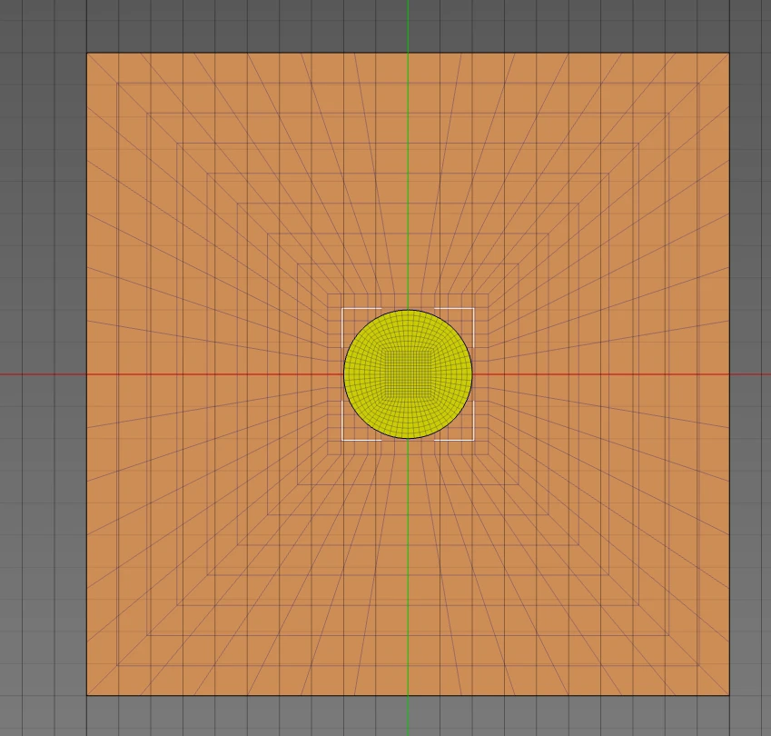
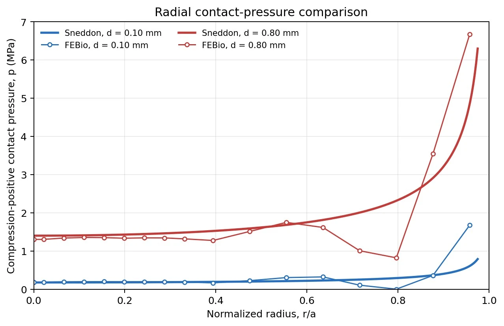

Resolve the contact region without refining everything.
I modeled a 4 mm diameter cylindrical punch indenting a 20 × 20 × 10 mm elastic block. A locally refined Hex8 mesh concentrated elements beneath the punch and near the circular contact edge.
The block modulus was 10 MPa and the punch modulus was 500 MPa, with ν = 0.3 for both. That made the punch 50 times stiffer, but still elastic. The model used 15,168 elements in total.



Remove a free rotation without overconstraining the punch.
The block base was fixed; the punch top received prescribed vertical displacement. A centerline node restrained the punch’s horizontal translation. An additional off-axis tangential restraint removed the remaining rigid rotation about the punch axis.
The report documents that correcting this remaining free rotation resolved an initial instability in the 0.10 mm case. Frictionless sliding-elastic contact connected the punch’s bottom surface to the block’s top surface.
Look beyond the brightest contour value.
Both the 0.10 mm and 0.80 mm indentation runs reached normal termination. I compared the extracted surface contact pressure and integrated reaction with the Sneddon flat-punch solution.
| Indentation | Analytical force | FEBio reaction | Signed difference |
|---|---|---|---|
| 0.10 mm | 4.3956 N | 5.2889 N | +20.3% |
| 0.80 mm | 35.1648 N | 32.9906 N | −6.2% |
Independent integration of the face-pressure data gave 5.3183 N and 32.9085 N, within 0.6% of the reported reactions. That is a consistency check on extraction and sign convention; it is not a substitute for physical validation.


A sharp edge changes what is worth comparing.
The ideal flat-punch solution becomes singular at its edge. The finite-element peak there depends on mesh resolution and contact interpolation, so I used integrated reaction force and off-edge pressure values rather than treating the maximum contour pressure as a converged quantity.
The finite block, fixed base, elastic punch, and larger deformation also violate the ideal half-space assumptions. The closer total force in the larger-indentation case does not prove that case is more physically accurate: several effects can offset one another.